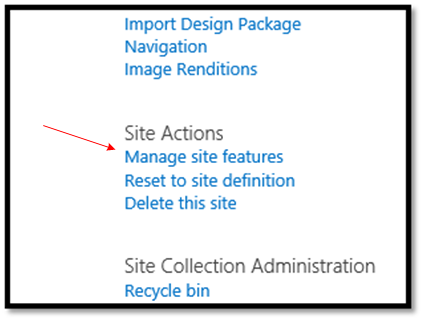
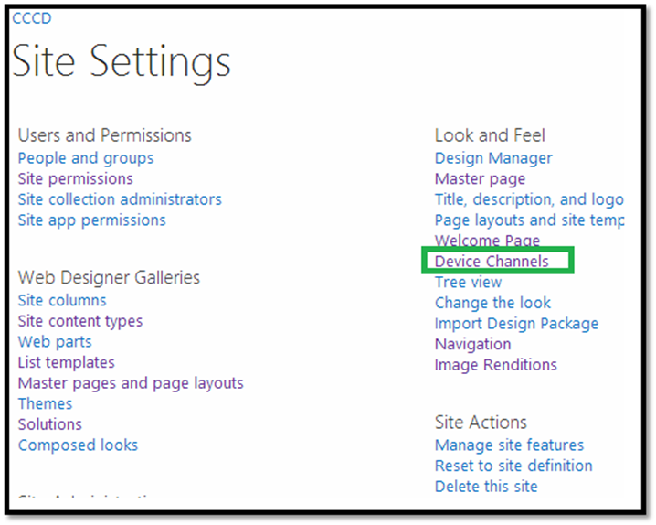
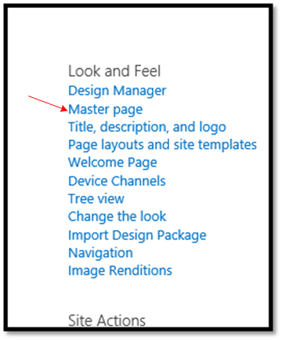
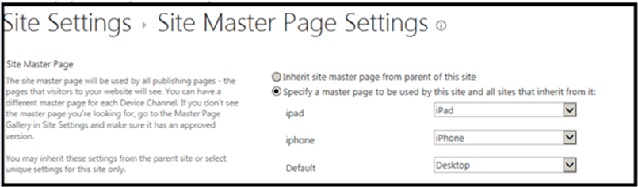
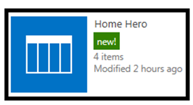
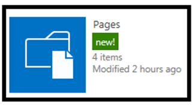

Summary: Learn about the different ways you can use display templates to render a hero image and content rotator in a Content by Search web part.
Last modified: September 10, 2014
In this article
Description of the sample
Prerequisites
Key components of the sample
Configure the SharePoint site collection
Configure the sample
Run and test the sample
Next steps
Pages and channels
Change log
Related content
Description of the sample
This sample app for SharePoint demonstrates how to use display templates to render a hero image and content rotator in a Content by Search web part.
Additionally, the display templates target mobile devices using responsive web design (RWD) and device channels.
Prerequisites
Key components of the sample
The sample app contains the following:
-
Branding.DisplayTemplates project, the app for SharePoint project.
-
Branding.DisplayTemplatesWeb project, the ASP.NET web application project.
-
Default.aspx. located in the Branding.DisplayTemplates\Branding.DisplayTemplatesWeb\Pages directory, which contains the HTML and ASP.NET controls for the sample's user interface
-
Default.aspx.cs located the Branding.DisplayTemplates\Branding.DisplayTemplatesWeb\Pages directory, which contains all the code used to deploy the artifacts which support this sample.
-
SharePointContext.cs located in the Branding.DisplayTemplates\Branding.DisplayTemplatesWeb directory, which encapsulates the information that the sample app needs to get from SharePoint.
-
The following folders and contents, located in the Branding.DisplayTemplates\Branding.DisplayTemplatesWeb directory:
-
CSS
Contains CSS files with styles specific to the device channel. -
Images
Contains images used in the sample. -
Masterpages
Contains master pages specific to the device channel. -
Scripts
Contains control and item template JavaScript files. -
Templates
Contains templates used to create pages added by the sample app.
-
Configure the SharePoint site collection
For the display templates sample to render correctly, you must first create and configure your SharePoint site collection.
To configure the SharePoint site collection
-
Navigate to your SharePoint tenancy and create a new site collection using the Developer Site template in the Collaboration tab.
Figure 1. Create new site collection.

-
Once the site collection is created, navigate to Site Settings, and in Site Collection Administration click Site collection features.
Figure 2. Site collection features link.

-
On the Site Collection Features page, click Activate for the SharePoint Server Publishing Infrastructure feature.
Note This feature may take several minutes to activate.
-
Navigate again to Site Settings, and in Site Actions click Manage site features.
Figure 3. Manage site features link.
 -
On the Site Features page, click Activate for the SharePoint Server Publishing feature.
-
Click Deactivate for Mobile Browser View.
Configure the sample
Update the Site URL property of the Branding.DisplayTemplates app for SharePoint project with the URL of the SharePoint site collection you configured in the previous section. You may be prompted to enter your credentials to access the site.
Run and test the sample
To run and test the sample, do the following:
-
Press F5 to run the app.
-
Sign in to your SharePoint site if you are prompted to do so by the browser.
-
If you are prompted to trust the self-signed Localhost certificate, click Yes.
Figure 4. Security alert: self-signed certificate.

You may also be prompted to install the certificate, if so, click Yes.Figure 5. Security warning: install certificate.

-
On the consent page to grant permissions to the app, select Trust It.
Figure 6. Grant app permissions

-
You should now see the app displayed in the browser. Click Deploy to create the site columns, content type, list, initialize the list with data, and upload the master pages, images, CSS files and display template JavaScript files.Figure 7. Branding - Display Templates.

Once you've clicked Deploy, if you want to re-deploy the artifacts, you need to click Delete Artifacts to delete the site columns, content type, list, master pages, CSS, images, and display template JavaScript files and then you can click Deploy again.
Next steps
Now you're ready to configure the device channels, master pages, and view the results.
To configure the device channels
-
Navigate to the SharePoint site and log into the site with Site Owner credentials.
-
Navigate to Site Settings and in the Look and Feel section, click Device Channels.
Figure 8. Device channels link.
 -
On the Device Channels page, click new item.
-
Enter information to create the iPad device channel, as shown in figure 7, and click Save.
Figure 9. iPad device channel.

-
Enter information to create the iPhone device channel, as shown in figure 8, and click Save.
Figure 10. iPhone device channel.

To configure the master pages
-
Navigate to the SharePoint site and log into the site with Site Owner credentials.
-
Navigate to Site Settings and in the Look and Feel section, click Master page.
Figure 11. Master page link.
 -
Configure the appropriate master page for each device channel, as shown in figure 10.
Figure 12. Configuring the master page for each device channel.

After you have successfully configured your SharePoint environment and deployed the artifacts using the Branding.DisplayTemplates app for SharePoint, you can view the Home Hero slider in different pages and device channels.
To access the Home Hero slider contents
-
Navigate to Site Contents, as shown in figure 11.
Figure 13. Site contents link.

-
Click the Home Hero list, as shown in figure 12.
Figure 14. Home Hero list link.
Four list items are displayed in the Home Hero slider control as shown in figure 13.Figure 15. Home Hero list.

These list items were created by the Branding.DisplayTemplates app for SharePoint after it provisioned the Home Hero list. You can edit these items or leave the default content. We encourage you to at least view the properties of a list item to see all the different things you can configure such as text, images, colors, opacity, and URL.Note If you edit the properties of a list item you must wait until the Search Service crawls the list again to see the changes appear in the Home Hero slider.
-
If you navigate back to Site Contents and select the Pages library, you will find three newly created pages:
-
desktop.aspx
-
rwd.aspx
-
channels.aspx

These pages were created by the Branding.DisplayTemplates app for SharePoint. The next section discusses these pages.
Pages and channels
The pages within the Pages library render the Home Hero slider with different views. The Home Hero slider is a Content by Search web part. Customized display templates are used to render the data returned via the Search Service.
| Note |
|---|
|
The Content by Search web part will only display the data from a SharePoint list after the list items have been crawled and are in the search index. In an on-premises SharePoint 2013 environment you can manually start a crawl, see Start, pause, resume, or stop a crawl in SharePoint Server 2013. In a SharePoint online site collection you cannot start the crawl manually, so it may take some time before data from a SharePoint list is in the search index. See this support article for information about how long it may take to crawl the data, Search doesn't return all results in SharePoint Online. |
After crawling is complete the hero control will display properly on pages.
Desktop.aspx page
This page displays the desktop view of the Home Hero slider. Click it to open a page with desktop version of the hero control.

The Content by Search web part on the desktop.aspx page is configured to use the HomePageHeroControlSlideshow.js control display template. All of the Content by Search web parts use the same control display template.
The Content by Search web part on the desktop.aspx page is configured to use the HomePageHeroItemTemplate.js item display template. The HomePageHeroItemTemplate.js item display template implements a design targeted for desktop web browsers. This approach is typically used in an Intranet scenario where the page is not targeting mobile devices. Each Content by Search web part uses a different item template.
rwp.aspx page
Click the rwd.aspx page in the Pages library. This page utilizes responsive web design and displays different views when a browser's screen size changes. Resize your browser to see the responsive web design adapt to your browser's width.
In the largest view, (greater than 768 pixels wide and less than or equal to 1168 pixels), the responsive design renders the view shown in figure 16.

This view is the same as the desktop version on the desktop.aspx page.
In the smaller view (less than or equal to 768 pixels wide), the responsive design renders the view shown in figure 17. Notice the layout and the content changes as well as the overall width of the display.

The Content by Search web part on the rwd.aspx page is configured to use the HomePageHeroControlSlideshow.js control display template. All of the Content by Search web parts use the same control display template.
The Content by Search Web Part on the rwd.aspx page is configured to use the HomePageHeroItemTemplate_rwd.js item display template. The HomePageHeroItemTemplate_rwd.js item display template implements a responsive web design targeted for desktop and mobile web browsers. This approach is typically used in a scenario where the page targets desktop browser and mobile devices.
Channels.aspx page
This sample includes device channels for the following devices: desktop, iPad, and iPhone. To see the default device channel, click channels.aspx in the Pages library.

To see the different device channel views, append the
devicechannel parameter to the URL while browsing channels.aspx:
?devicechannel=<channel>
You could also use a developer tool to swap the user agent string to allow you to access different device channels from a desktop web browser or use an iPad or iPhone to access the different device channels.
To render the iPhone channel browse to https:// <site URL>/channels.aspx?devicechannel=iphone.
Notice at the top of the page the master page displays some text to let you know which master page is being rendered by the device channel.

The following code in the Master Page is used to display this text:
<div style="background-color:lightgreen; width:220px;text-align:center;">This is the iPhone Master Page</div>
Notice the layout and the content changes as well as the overall width of the display.

To render the iPad channel browse to: https:/ <site URL>/channels.aspx?devicechannel=ipad. The images on the hero control are rendered larger than those for the iPhone device channel. Also notice that the layout and the content changes, as well as the overall width of the display.

How the device channels, master pages, CSS, and display templates work together
The Content by Search web part on the channels.aspx page is configured to use the HomePageHeroControlSlideshow.js control display template. All of the Content by Search Web Parts share the same control display template. This control template sets up the overall container for the content displayed in the Content by Search web part. The control template also includes the code and logic used to cycle the different list items like a slide show.
The Content by Search Web Part on the channels.aspx page is configured to use the HomePageHeroItemTemplate_channel.js item display template. The HomePageHeroItemTemplate_channel.js item display template implements a design targeted for desktop and mobile web browsers. This approach is typically used in a scenario where the page targets desktop browsers and mobile devices and you wish to deliver the smallest amount of page payload as possible to make pages load as fast as possible.
Three master pages are used to implement this approach.
-
Desktop.master
-
iPad.master
-
iPhone.master
When the page is loaded in the default device channel, desktop.master is used. Desktop.master is also used for default.aspx and rwd.aspx. This master page loads the hero_desktop.css CSS file. This CSS file contains styles specific to the desktop version of the Home Hero slider.
When the page is loaded in the iPad device channel, iPad.master is used. This master page loads the hero_ipad.css CSS file. This CSS file contains styles specific to the iPad version of the Home Hero slider.
When the page is loaded in the iPhone Device Channel, iPhone.master is used. This master page loads the hero_iphone.css CSS file. This CSS file contains styles specific to the iPhone version of the Home Hero slider.
The HomePageHeroItemTemplate_channel.js item display template is used for all three device channels, it uses the CSS styles it inherits from the CSS file the master page includes.
Change log
First release.